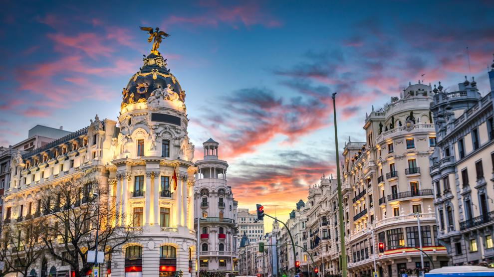

Capital de España y conocida habitualmente como Villa y Corte, Madrid es la mayor ciudad del país y la segunda de la Unión Europea, con una población de más de 3 millones de habitantes (más de 6 en el área metropolitana).

Localización
Monumentos
- Estatua del Oso y el Madroño en la Puerta del Sol
- Plaza Cibeles y Fuente de Cibeles
- Puerta de Alcalá
- Museo del Prado